En esta sección vamos a enseñarles el proceso de cómo construimos a Tita de inicio a final. Tita, nos ayudará al cuidado de nuestras plantitas con las siguientes funciones:
Controlará la temperatura del ambiente y medirá la humedad del suelo, esta información será mostrada al usuario a través de una pantalla que se activará mediante un pulsador.
● Controlará la temperatura del ambiente y medirá la humedad del suelo, esta información será mostrada al usuario a través de una pantalla que se activará mediante un pulsador.
● Dará avisos a través de luces LED: el amarillo se encenderá cuando la tierra esté seca y necesite ser regada, la luz roja se encenderá cuando la temperatura ambiental sea muy cálida y la luz azul cuando la temperatura sea muy fría.
Con el propósito de cumplir estos procesos y construir a Tita necesitaremos los siguientes componentes:
1. Arduino UNO
Es una plataforma de creación de electrónica de código abierto, la cual está basada en hardware y software libre, flexible y fácil de utilizar para los creadores y desarrolladores
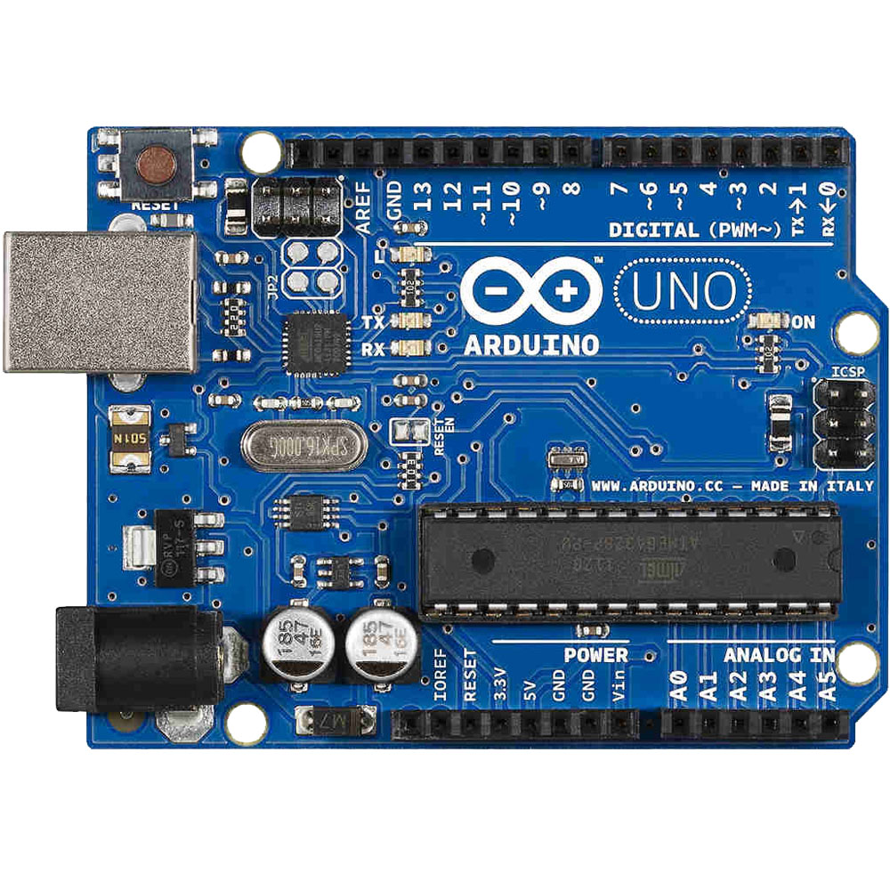
2. Sensor de humedad de suelo FC-28:
El Sensor de humedad de Suelo FC-28 permite medir de forma sencilla la humedad del suelo por medio de 2 electrodos resistivos. Compatible con Arduino, PIC, ESP8266/NodeMCU/NodeMCU-32. El sensor es ideal para monitorear el nivel de humedad de tus plantas y así recordar cuando necesitan ser regadas o incluso para realizar un sistema totalmente automatizado de riego añadiendo una válvula o una bomba de agua. Si el sistema se conecta a internet podríamos controlar/monitorear nuestro jardín desde cualquier lugar del mundo.
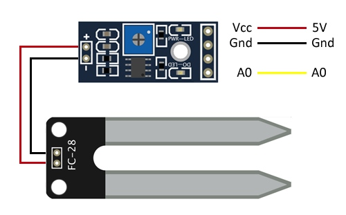
3. Sensor de temperatura de ambiente LM35:
LM35 es un sensor de temperatura analógico con buenas prestaciones, económico, sencillo de usar, dimensiones reducidas. Permite medir temperatura en un rango desde -55ºC hasta 150ºC. Su salida es de tipo analógica y lineal con una pendiente de 10mV/ºC. El sensor es calibrado de fábrica a una precisión de 0.5ºC. Entre sus aplicaciones podemos encontrar termómetros, termostatos, sistemas de monitoreo y más. Es un sensor muy popular por su fácil uso y variadas aplicaciones. No necesita de ningún circuito adicional para ser usado. Se alimenta directamente con una fuente de 5V y entrega una salida analógica entre 0V a 1.5V. Este voltaje analógico puede ser leído por el ADC de un microcontrolador como PIC o Arduino.
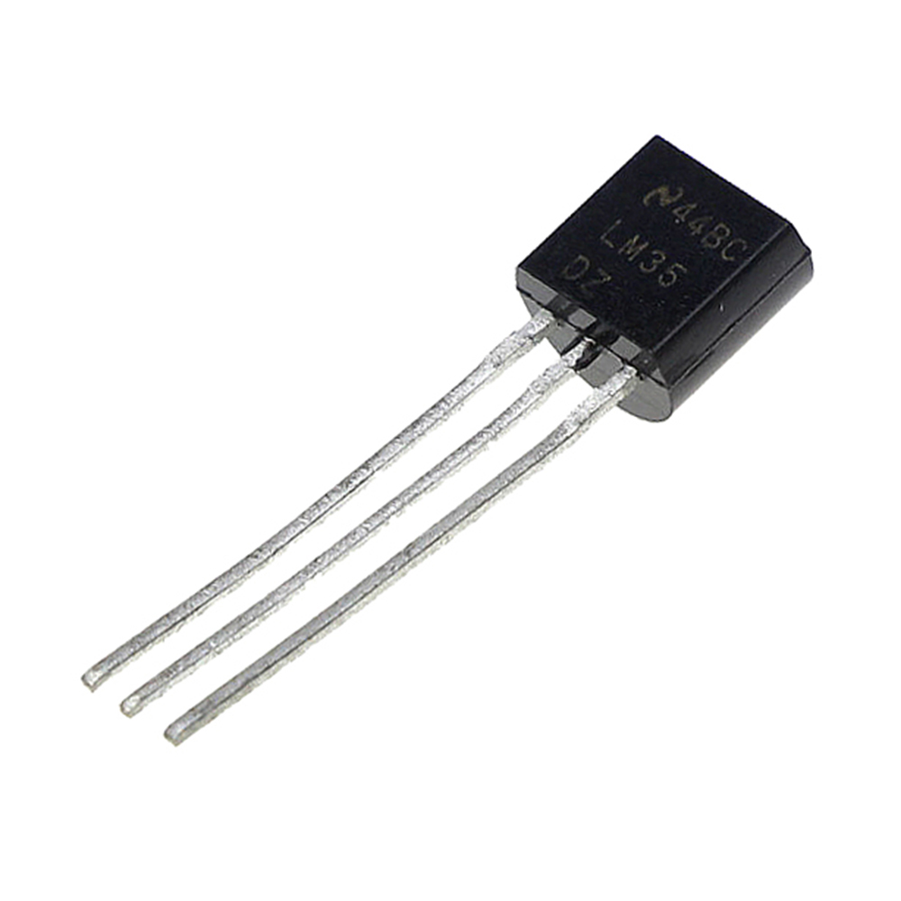
4. Display LCD 16x2 I2C:
Es una pequeña pantalla de tipo LCD denominado en inglés “Liquid Crystal Display” y en español “Pantalla de cristal líquido”. Este display tiene un tamaño de 16×2 que hace referencia a que la pantalla cuenta con 2 filas y cada fila tiene la capacidad de mostrar 16 caracteres o símbolos, por lo general alfanuméricos, los cuales se pueden definir desde programación utilizando un microcontrolador o tarjeta de desarrollo.
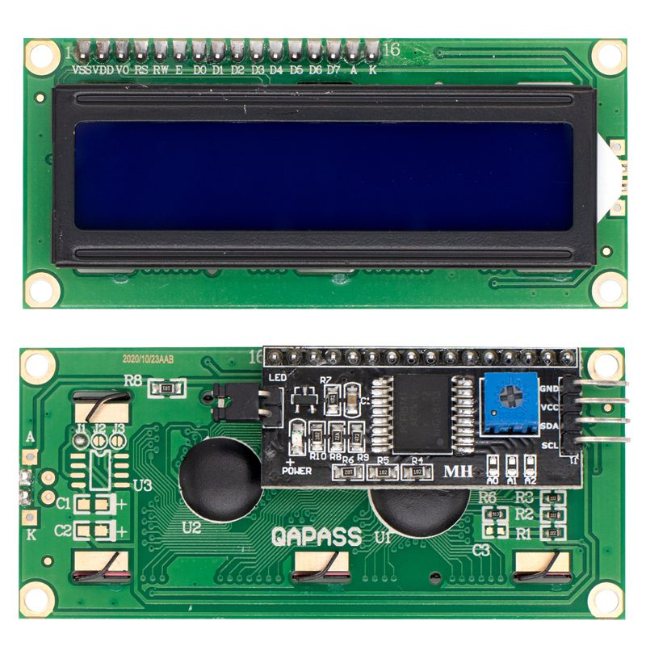
5. Tiras de LED RGB 5V:
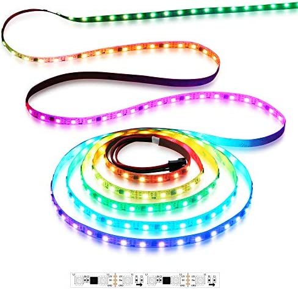
6. Pulsador / botón:
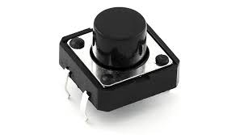
7. Paquete de jumpers:
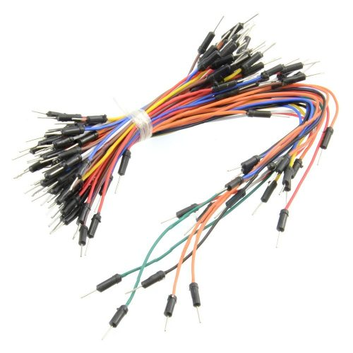
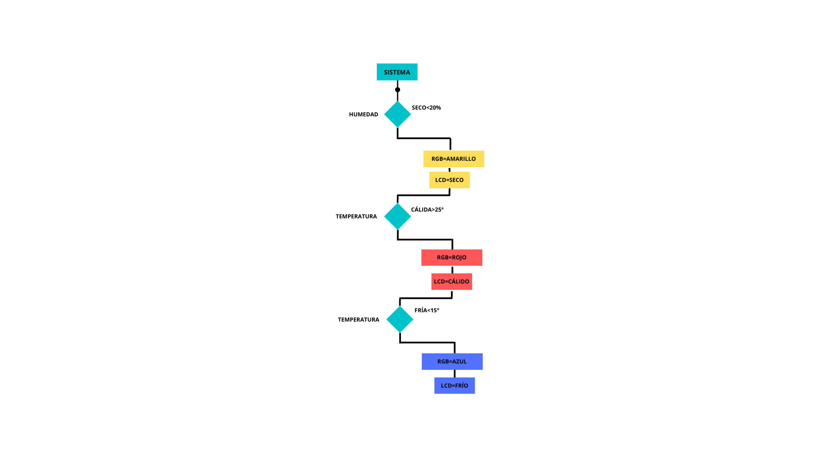
BOCETEANDO A TITA
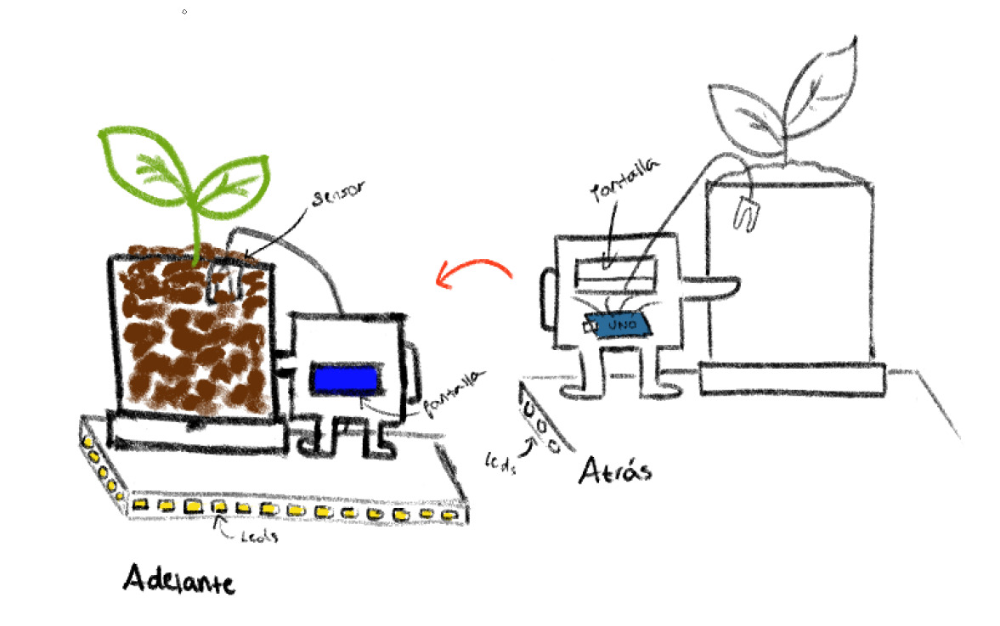
DISEÑO 3D
Propuesta 1 | Vistas
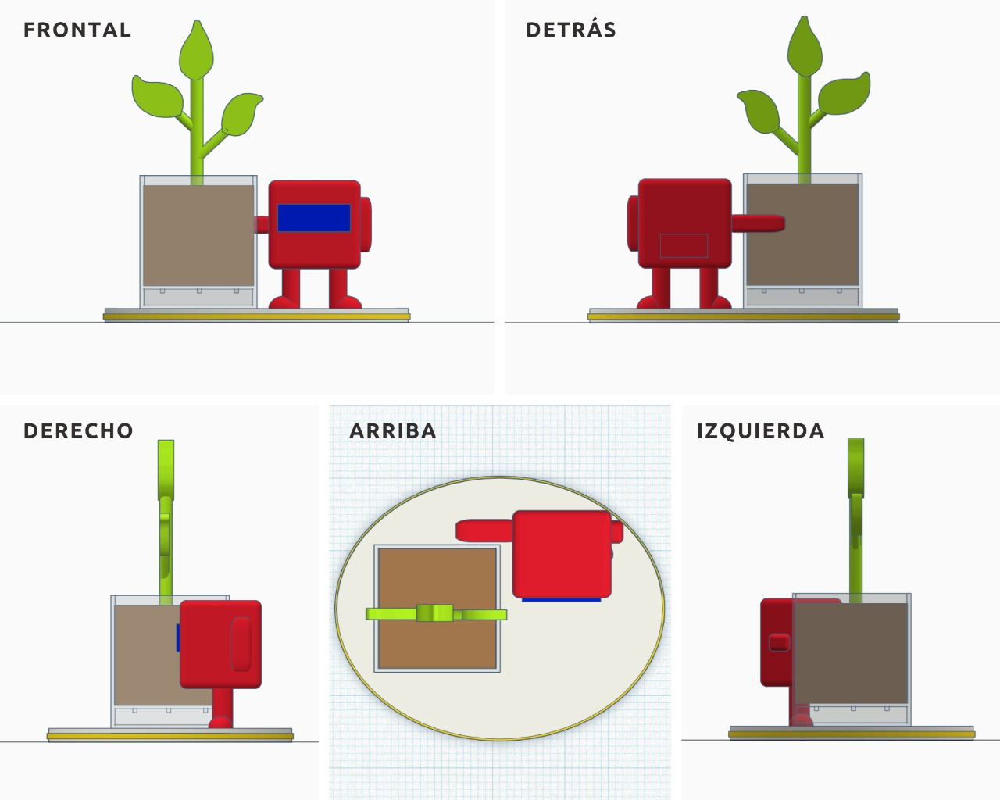
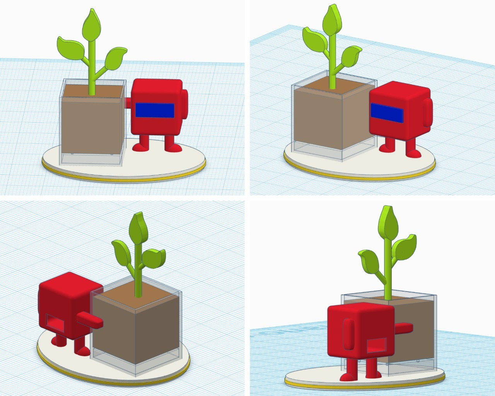
Propuesta 2 | Vistas
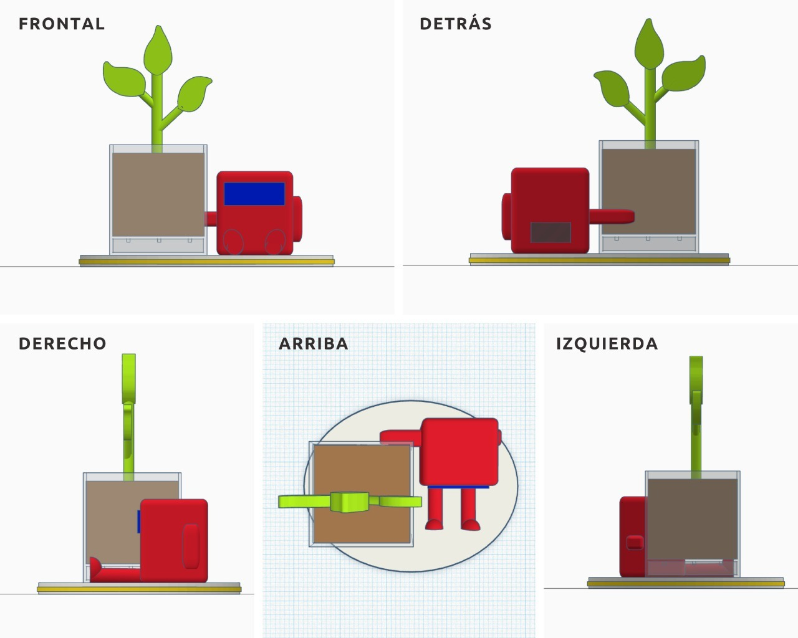